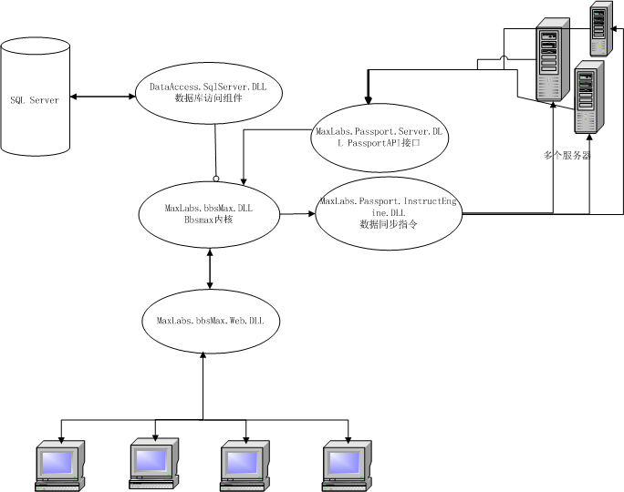

bbsmax 不是一个免费产品，源代码仅限用于学习，禁止用于商业站点或者其他商业用途
如果您要将bbsmax用于商业用途，需要从官方购买商业授权，得到授权后可以基于源代码二次开发
版权所有 厦门麦斯网络科技有限公司
公司网站 : www.bbsmax.com
| 项目名称 | 项目说明 | 项目依赖 |
|---|---|---|
| MaxLabs.bbsMax.Rescourses | 资源项目，目前只放一些语言包，方便以后支持多语言。无功能行的代码 | 无 |
| MaxLabs.bbsMax.RegExp | 正则表达式项目。 系统中所有的正则表达式全部定义于这里，无功能性的代码 | 无 |
| MaxLabs.bbsMax.Project | 数据库项目， 存放BBSMAX数据库结构，包括所有的bbsmax数据库表、视图、触发器、函数、关系、和部分存储过程的脚本资源文件，无功能性的代码 | 无 |
| MaxLabs.Passport.Proxy | bbsmax的Passport服务器和客户端公用的传递数据的代理类 | 无 |
| MaxLabs.Passport.Client | Passport客户端接口， 当挂接到Passport服务器后通过此项目接收由Passport服务器发送过来的指令 | MaxLabs.Passport.Proxy |
| MaxLabs.Passport.ClientKit | Passport的客户端开发工具箱（待完善） | 无 |
| MaxLabs.bbsMax | bbsmax业务逻辑层BBSMAX内核部分. |
MaxLabs.bbsMax.Rescourses MaxLabs.bbsMax.RegExp MaxLabs.Passport.Proxy 当开启Passport服务器的时候需要通过MaxLabs.bbsMax.IInstructEngine接口间接引用MaxLabs.Passport.InstructEngine |
| MaxLabs.Passport.InstructEngine |
Passport服务器数据同步指令发送引擎部分， 负责发送同步数据同步指令到每个Passport客户端 |
MaxLabs.Passport.Proxy MaxLabs.bbsMax |
| MaxLabs.bbsMax.DataAccess.SqlServer | bbsmax数据访问层,这个项目内的DAO类均继承自MaxLabs.bbsMax.DataAccess.DaoBase<T>抽象类，定义于MaxLabs.bbsMax项目 |
MaxLabs.bbsMax.Rescourses MaxLabs.bbsMax |
| MaxLabs.Passport.Server | 系统整合WebService ,Passport服务器 API接口 |
MaxLabs.Passport.Proxy MaxLabs.bbsMax |
| MaxLabs.bbsMax.Web | Web层。 | 除MaxLabs.bbsMax.Project以外的所有项目 |
